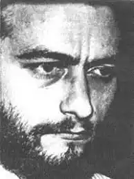
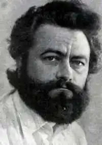

22 грудня 1948 р. (за паспортом 1 січня 1949 р.) у Донецьку народився український письменник-фантаст, Олександр Тесленко — лицар з Донецьку. Його батько, Костянтин Макарович Тесленко письменник, з сім'ї вчителя, рідний племінник письменника Архипа Тесленка. Мати – Марія Павлівна Лісовська, теж письменниця. Костянтин і Марія студентами Харківського університету закохалися та побралися. Згодом випускники приїхали у Донецьк і викладали українську мову і літературу в середній школі № 75.
Батьками Олександра написані у співавторстві книги оповідань і повістей, "Скільки житиму любитиму", "На море слідів не залишається", "Крізь грозу", "Знайдені крила", "Різнобарв'я", "Відлуння серця", "Незгасимі зоряниці". Кость Маркович автор повісті "Богучар" (1982); роману "Зимовий грім". Та інші твори, переважно на морально-етичну, екологічну, шкільну тематику. Батько майбутнього фантаста був письменником-патріотом, якому завдячувало своїм громадянським світоглядом чимало вихідців із шахтарського краю, зокрема Василь Стус.
Певну роль Костянтин Макарович відіграв і у долі відомого українського фантаста Віктора Савченка: 1972 року редактори донецького журналу "Донбас" Кость Тесленко і Григорій Кривда опублікували повість молодого дніпропетровського автора "Я ще повернусь" та ще кілька творів переслідуваних КГБ українських патріотів, за що обох редакторів звільнили з роботи… 3Як усі повоєнні діти Сашко виховувався вулицею, бігав із ключем на шиї та шматком хліба з сіллю в руці. Пишався, що тато був шкільним вчителем Василя Стуса, а письменник-фантаст Віктор Савченко називав батька своїм учителем. Ще школярем Олександр почав писати вірші, дебютував ліричною добіркою в альманасі "Вітрила". Непередбачене передбачення. Захід сонця в густу траву. Спогад перший. Останнє побачення. Вічний докір. Невже я живу? Наша совість народжена вдруге. Хай з реторти, а все-таки є. Передбачення болю і туги Захід. Сонце. Твоє і моє. Закінчивши школу, Сашко став студентом Донецького університету. Першокурсник Тесленко попросив у другокурсника Василя Голобородька почитати книгу Івана Дзюби "Інтернаціоналізм чи русифікація". Після доносу добродіїв "куди треба" їх обох у січні 1967 року вигнали з комсомолу і з університету. Довелося Олександрові працювати на деревообробному заводі, а потім санітаром у хірургічній клініці. Згодом він став студентом Київського медичного інституту ще і зіркою в гуртожитку, бо умів геть усе: слюсарювати, столярувати, ремонтував старі швейні машинки (і сам шив), розбирався в усіх електричних приладах, лагодив праски, телевізори, каміни. По закінченні медичного інституту, став лікарем-анестезіологом у клініці серцевої хірургії під керівництвом М.Амосова. У цей період письменник Олександр Тесленко був частим гостем у родини Стусів. Він писав прозу і щедро вкрапляв поезію, приписуючи її персонажам, у 1971 опублікував перше оповідання, знімав аматорські фільми, навіть намагався екранізувати власні повісті, вчив угорську мову, перекладав твори московських письменників-фантастів. 4У 1978 р. працював старшим редактором відділу прози журналу "Дніпро". На громадських засадах вів у журналі "Наука і суспільство" розділ "Фантастика", тому приїздив до колег за листами. Володимир Чопенко згадував: "Сашко навідувався до нас часто, бува, засиджувалися допізна, розбавляючи житейські й літературні балачки червоним винцем. Він заявлявся з бородою і без, голений "під Котовського" і з жорстким "їжачком", в окулярах і без них…" У 1979 р. після виходу першої книги "Дозвольте народитися" Тесленка прийняли до Спілки письменників України. Його приятель, письменник-фантаст Олег Романчук пригадує: "Гіппократ жив у ньому, хоча офіційно розв’язався Сашко із медициною, здається, в 1979 році. Але він завжди пам’ятав, що є лікарем. Був гарним психологом. Якось зізнався, що дуже хотів стати лікарем-психіатром. Став письменником — гарним, талановитим. Утім, лікар жив у ньому. Мав Сашко знаменитий портфель, в якому було геть усе на всі, здавалось би, найнесподіваніші житейські випадки: рукописи й книги, молоток і обценьки, бинт і лейкопластир, пінцет і ножиці, кілька різновидів клею, пігулки і зеленка, ізоляційна стрічка й шматок дроту… Завжди з повагою згадував свого колишнього шефа – академіка Миколу Амосова, якого з тонким гумором умів напрочуд дотепно копіювати у манері розмовляти. Мав гарних друзів – медиків, з якими вчився і працював, і які цінували його талант лікаря, письменника…". Здавалося, все пішло на добро: зустрів свою кохану Іду, народився у них Сашко-молодший… Капітан медичної служби Олександр Тесленко взяв участь у ліквідації аварії на Чорнобильської АЕС, з першого дня катастрофи. Це він, пішки здолав пекельний вир, знайшов місцину для першого військового шпиталю біля села Стещине. Це він на РАФіку-санітарові із наліпкою на передньому склі "ПРОЇЗД ВСЮДИ" приїхав до Києва, взяв "безбашених" журналістів і привіз до аварійного реактора. Завдяки цим відчайдухам у газеті "Молодь України" серед зливи брехні проросли паростки правди. "Збираючись гуртом, гомоніли про те, се, вином "Каберне" виводили стронцій з організму, і дякували Сашкові за нагоду побувати "там". 5Але наслідки участі у ліквідації аварії на Чорнобильської АЕС були для нього трагічні. Письменник-фантаст Олег Романчук згадував: "За кілька місяців до смерті сиділи із Сашком у редакції. Для мене він був характерником: погляд, голос, кремезна статура, сильні (як у коваля) руки… Кепкували з моєї лисини: та то від радіації… Сашко сміявся нарівні з усіма, а потім сказав рівним голосом: – Ну, а я вже все. Капець! – Сашко! Та перестань дурнею займатися… – Хлопці! Кого ви втішаєте? Я ж медик… У мене он вже нігті на ногах почорніли…" 41-річний Олександр Тесленко відійшов у фантастичний світ 10 червня 1990 року, похований в Києві на Байковому кладовищі (ділянка № 33). Після смерті О. Тесленка залишився незакінченим роман із символічною назвою "Як зустрітися з Богом?". Після його смерті, дружина Іда з малим Сашком переїхали до Лондона. Син письменника, Олександр Олександрович Тесленко й до сьогодні живе в Англії скромно, самотньо. Більша частина фантастичної спадщини Олександра Тесленка присвячена вигаданій планеті Інкані — штучній планеті 142-го штучного зоряного метакаскада, побудованій в 2860 році за проектом головного конструктора Івана Чапола. Відстань до Землі — 527 мільйонів кілометрів, до Сонця — 417 мільйонів кілометрів. На той час людство крім Інкани побудувало ще кілька таких штучних планет, наприклад, сусідню Веріану. Освітлювали планету ракети-сонця, які запускали щодоби. Середня тривалість життя людей і кіберів на той час становила два сторіччя. А Земля стала величезним музеєм, де жило й працювало сім мільярдів чоловік і біокіберів. Ціль цього музею — зберегти для нащадків інформацію про те, як жили люди раніше. Творча спадщина, фантастичного світу, що залишив по собі Олександр Тесленко для нас з вами: Дьондюраг (1979) Танець діліаків (1982) Дощ (1982) Кут паралельності (1982) Випробування добром (1982) Світячи іншим… (1983) Діти Ніколіана (1983) Корида (1983) Викривлений простір (1985) Крокодил не хотів літати (1988) Модель абсолютно чорного тіла (1988) Кам'яне яйце (1988) Генерал передчуває (1988) Пилосос історії (1989) Решта залежить від нашої уяви (1989) Кольорові сни ідіота (1989) Шалата дика (1989, оповідання) Як зустрітися з Богом (1989)